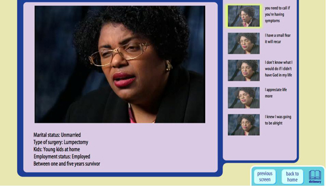
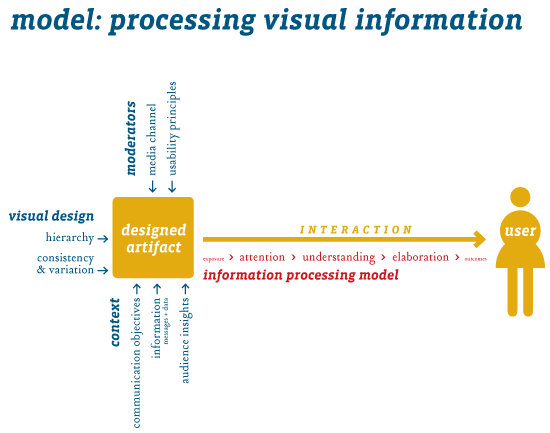
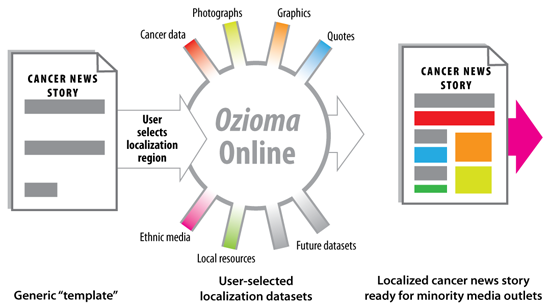
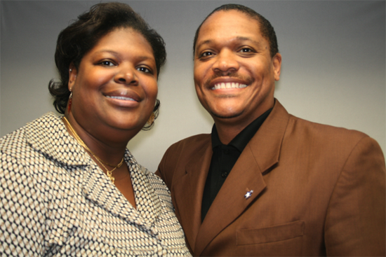

Center of Excellence in Cancer Communication Research at Washington University in St. Louis Health Communication Research Laboratory
- Overview
- Primary research and goals
- Key partnerships and collaborations
- Principal investigator
- Co-investigators
- Primary projects
- Secondary projects
- Publications
Web site: http://hcrl.wustl.edu
Overview: For more than 15 years, research from the Health Communication Research Lab (HCRL) has focused on developing and testing strategies to increase the reach and effectiveness of health communication interventions to disadvantaged and minority populations. The HCRL believes the impact of such research on eliminating cancer health disparities will be greatest when it is highly integrated within existing clinical and community cancer control systems and infrastructure. This CECCR will advance cancer communication science by testing disparity-reducing interventions in large-scale studies conducted in real-world settings and within existing cancer control systems, thus enhancing the potential for dissemination. HCRL participated in the first iteration of CECCR; for more information about their first set of projects, see the CECCR Archive.
Primary research and goals:
- A focus on eliminating disparities.
- Integration of cancer communication into existing systems of clinical care and cancer control.
- Real-world testing of cancer communication interventions with an eye toward dissemination.
Key partnerships and collaborations:
- United Way 2-1-1
- American Cancer Society
- StoryCorps
- Food Stamps
- Colorectal Cancer Control Program (CRCCP)
- Breast Cancer Education Package (BCEP)
- Local Carpenter’s Union
- Public Housing
Principal investigator: Dr. Matthew W. Kreuter, Ph.D., M.P.H. is a professor of social work and medicine and a member of the Institute for Public Health at Washington University in St. Louis. He is director of the HCRL, one of five NCI-designated CECCR. His research explores strategies to increase the reach and effectiveness of health information in low-income and minority populations to help eliminate health disparities. Dr. Kreuter received his Ph.D. and M.P.H. in health behavior and health education from the School of Public Health at the University of North Carolina, Chapel Hill.
Contact information:
Matthew W. Kreuter
MKREUTER@GWBMAIL.WUSTL.EDU
Co-investigators:
Ross Brownson
Charlene Caburnay
Glen Cameron
Elisia Cohen
Graham Colditz
Heather Corcoran
Brad Evanoff
Debra Haire-Joshu
Amanda Hinnant
Donna Jeffe
Kim Kaphingst
Doug Luke
Amy McQuenn
Mary Politi
Jason Purnell
Mario Schootman
Enbal Shacham
Vetta Thompson
Erica Waters
Anjanette Wells
Primary projects
- Cancer control referrals and navigators into United Way 2-1-1
- Lead investigator: Matthew Kreuter, Ph.D., M.P.H.
- Overview: Integrating Cancer Control Referrals and Navigators into United Way 2-1-1 is the first cancer communication research partnership with United Way 2-1-1, the nation’s largest information and referral system. The study will connect 2-1-1 callers with needed clinical and preventive cancer services in their community available at low-cost or for free and will test the effects of cancer control navigators and tailored communication in increasing the use of these services.
- Ozioma: Enhancing localization of cancer news stories in black newspapers
- Lead investigator: Charlene Caburnay, Ph.D., M.P.H.
- Overview: Ozioma builds on previous work with the Ozioma News Service, whose goal is to increase the amount and quality of cancer coverage in black newspapers and readers’ cancer information seeking and preventive behaviors. In this extension, we partner with three divisions of the American Cancer Society (ACS) to test our intervention against an enhanced version in which local ACS staff supplement Ozioma's cancer news releases with community-specific information.
- Survivor stories impact on cancer patients' QOL and follow-up care
- Lead investigator: Donna Jeffe, Ph.D.
- Overview: This project evaluates effects of a new touch-screen, interactive cancer communication tool among African American women being treated for breast cancer. The tool provides a searchable library of hundreds of videotaped stories on coping, social support, and relationships, told by other local African American breast cancer survivors. Effects on quality of life and adherence to follow-up care will be evaluated.
Figure: Screenshot of interactive tool that includes a storyteller’s characteristics (lower left), unique story clips (right) and viewing screen (center).
Secondary projects
- Make it Your Own (MIYO)
- Lead researcher: Matthew Kreuter, Ph.D., M.P.H.
- Overview: MIYO will help state health agencies and local service providers use evidence-based approaches to educate underserved populations about the importance of screening. Users select the material they want to develop from a menu of options, and the system then allows them to choose from a set of audience-tested images, messages, and calls to action to create their own version of that product. Users can add their contact information and organizational logo. Lastly, the system generates and displays the product they created, which can be printed or saved as an electronic file.
- Implications for cancer prevention and control: Targeted health communication has shown promise for increasing information effectiveness. This project uses technology-based strategies that allow community partners to develop evidenced-based materials that are targeted to the unique populations they serve.
- Maximizing the social impact of cancer registry data
- Lead researcher: Matthew Kreuter, Ph.D., M.P.H.
- Overview: To keep pace with increasingly sophisticated visual displays of data from modern media outlets, the cancer control community must develop clear and compelling ways to share knowledge with the public. To do this, a collaborative team of population cancer surveillance epidemiologists; experts in design and development of visual displays of quantitative information; and cancer communication researchers have come together to create a conceptual model to describe the process by which we believe information processing can be impacted and enhanced by design techniques. A series of experiments and expert interviews will be conducted to refine and evaluate elements of the model.
- Implications for cancer prevention and control: CSQS, a prototype of an Internet-based decision support tool, could ultimately be considered for use by physicians and other members of the cancer care team, as well as patients and their caregivers, to encourage shared decisionmaking and support individualized and patient-centered cancer care.
  OziomaOnline
OziomaOnline
- Lead researchers: Matthew Kreuter, Ph.D., M.P.H.; Charlene Caburnay, Ph.D., M.P.H. (Project Director)
- Overview: OziomaOnline builds on previous and current work with our Ozioma News Service for black newspapers. With this American Recovery and Reinvestment Act (ARRA)-funded supplement, the HCRL is building a dynamic Web application that will help users to generate locally relevant and race-specific cancer news stories. This automated system will allow both national media outlets and local reporters to efficiently target their cancer-related news stories to specific populations and locations across the United States.
- Implications for cancer prevention and control: Localized stories are more meaningful to readers and are more likely to be published. Greater public awareness can lead to greater cancer prevention and control and, ultimately, healthier communities.
- StoryCorps’ narratives: Disclosing a cancer diagnosis
- Lead researcher: Linda Squiers, Ph.D.
- Overview: The aims of this project were to:
- Determine the feasibility of implementing StoryCorps
 at cancer centers to capture survivors’ stories about communicating a cancer diagnosis to a child
at cancer centers to capture survivors’ stories about communicating a cancer diagnosis to a child - Conduct a pilot study to determine how participating in a StoryCorps’ interview affected participants
- Develop the educational content for a Web-based educational tool that incorporated narratives from cancer patients and their children gathered via the StoryCorps program to help cancer patients tell their children about their diagnosis.
- Determine the feasibility of implementing StoryCorps
- Implications for cancer prevention and control: StoryCorps is an effective method of gathering cancer survivors’ personal narratives about their cancer experiences. These stories can be used to develop educational tools to help cancer patients and their families. In addition, participating in StoryCorps can positively affect participants’ communication about cancer with family members and friends.
Figure: Participants remember their father, who died of colon cancer. They remember intimate moments and how colon cancer changed their lives. - Effective communication strategies for promoting smoking cessation in carpenters
- Lead researcher: Bradley Evanoff, M.D., M.P.H.
- Overview: The overall aim of this project was to promote smoking cessation among blue-collar workers, a group with high rates of smoking and poor rates of smoking cessation. The HCRL sought to understand the health beliefs and personal preferences of union carpenters to develop culturally-specific communication materials to promote smoking cessation. The specific aims of the study were:
- To explore culturally-specific attitudes and beliefs about smoking among construction workers through focus groups and questionnaires
- To develop and pilot test communication strategies to increase carpenters’ participation in a union-based smoking cessation program.
- Implications for cancer prevention and control: This project contributes to the field of cancer prevention by designing and evaluating innovative communication strategies for promoting tobacco cessation. The communication strategies developed in this study can be used to eliminate the health disparities seen in different worker populations.
Publications
- Alcaraz, K.I., Weaver, N.L., Andresen, E.M., Christopher, K., & Kreuter, M.W. (In press). The neighborhood voice: Evaluating a mobile research vehicle for recruiting African Americans to participate in cancer control studies. Evaluation & the Health Professions.
- Eddens, K., Kreuter, M., & Archer, K. (in press). Proactive screening for health needs in United Way’s 2-1-1 information and referral service. Journal of Social Service Research.
- Luke, D., Caburnay, C., Cohen, E.L. (in press). How much is enough? New recommendations for using constructed week sampling in newspaper content analysis of health stories. Communication Methods and Measures.
- Kreuter, M.W., Holmes, K., Alcaraz, K., Kalesan, B., Rath, S., Richert, M., McQueen, A., Caito, N., Robinson, L., & Clark, E.M. (2010). Comparing narrative and informational videos to increase mammography in low-income African American women. Patient Education and Counseling, 81, S6-14.
- McQueen, A. & Kreuter, M.W. (2010). Women’s cognitive and affective reactions to breast cancer survivor stories: A structural equation analysis. Patient Education and Counseling, 81, S15-21.
- Dearing, J.W. & Kreuter, M.W. (2010). Designing for diffusion: How can we increase uptake of cancer communication innovations? Patient Education & Counseling, 81, S1-S100-S110.
- Thompson, V.L. S., Kalesan, B., Wells, A., Williams, S.L., & Caito, N. (2010). Comparing the use of evidence and culture in targeted colorectal cancer communication for African Americans. Patient Education and Counseling, 81, 22-33.
- Hood, S., Sanders Thompson, V.L., Cogbill, S., Arnold, L., Talley, M., & Caito, N. (2010). African American’s self-report patterns using the National Cancer Institute Colorectal Cancer Screening Questionnaire. Journal of Cancer Education, 25(3), 431-436.
- Cohen, E.L., Caburnay, C., Len-Rios, M., Poor, T., Cameron, G., Luke, D., Stemmle, J., & Kreuter, M.(2010). Engaging ethnic media to expand the reach and effectiveness of communication strategies to reduce health disparities. Health Communication, 25(6-7), 569-71.
- Len-Rios, M., Cohen, E.L., & Caburnay, C.A. (2010). Readers use Black newspapers for health/cancer information. Newspaper Research Journal, 31(1), 20-35.
- Lumpkins, C.Y., Bae, J., & Cameron, G.T. (2010). Generating conflict for greater good: Utilizing contingency theory to assess Black and mainstream newspapers as public relations vehicles to promote better health among African Americans. Public Relations Review, 36, 73-77.
- Kreuter, M.W. & Bernhardt, J. (2009). Reframing the dissemination challenge: A marketing and distribution perspective. American Journal of Public Health, 99(12): 2123-2127.
- Alcaraz, K., Kreuter, M.W., & Bryan, R. (2009). Use of GIS to identify optimal settings for cancer prevention and control in African American communities. Preventive Medicine, 49(1), 54-57.
- Deshpande, A.D., Sanders Thompson, V.L., Vaughn, K.P., & Kreuter, M.W. (2009). Use of socio-cultural constructs in cancer research among African Americans: A review. Cancer Control, 16(3), 256-265.
- Eddens, K., Kreuter, M.W., Morgan, J.C., Beatty, K., Jasim, S.A., Garibay, L.B., Tao, D., Buskirk, T., & Jupka, K. (2009). Disparities by race/ethnicity in cancer survivor stories available on the Web. Journal of Medical Internet Research, 11(4), e50.
- Sanders Thompson, V., Talley, M., Caito, N., & Kreuter, M.W. (2009). African American men: Perceptions of factors influencing health information seeking. American Journal of Men’s Health, 3(1), 6-15.
- Morris, D.S., Rooney, M.P., Wray, R.J., & Kreuter, M.W. (2009). Measuring exposure to health messages in community-based intervention studies: A systematic review of current practices. Health Education Behavior, 36(6),979-998.
- Caburnay, C.A., Kreuter, M.W., Cameron, G.A., Luke, D.A., Atkins, P., McDaniels, L.M., & Wohlberg, M.T. (2008). Black newspapers as a tool for cancer education in African American communities. Ethnicity and Disease, 18(4), 488-495.